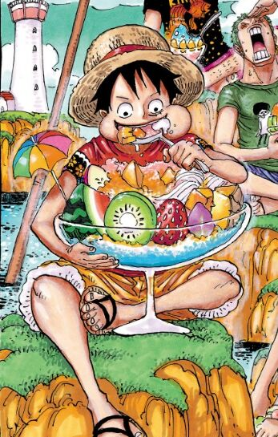
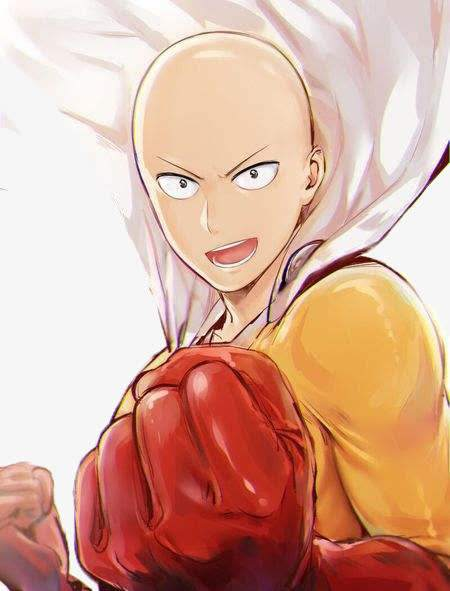
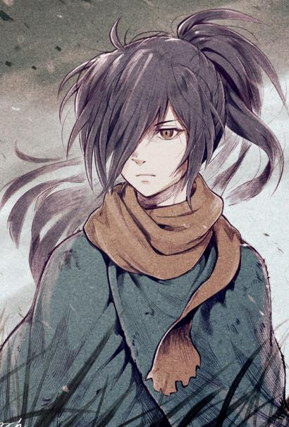

动漫
动漫 壁纸
壁纸 音乐
音乐 反馈
反馈 电影
电影 弹幕
弹幕 人物
人物 埼玉
埼玉 路飞
路飞 百鬼丸
百鬼丸

路 飞
（日本漫画《海贼王》的角色）蒙奇·D·路飞，日本漫画《海贼王》的主角，外号“草帽”路飞，草帽海贼团、草帽大船团船长，极恶的世代之一。橡胶果实能力者，悬赏金15亿贝里。梦想是找到传说中的One Piece，成为海贼王。路飞性格积极乐观，爱憎分明，而且十分重视伙伴，不甘屈居于他人之下，对任何危险的事物都超感兴趣。和其他传统的海贼所不同的是，他并不会为了追求财富而杀戮，而是享受着身为海贼的冒险和自由。
角色形象：
一头黑色的短发，看上去有些乱，左眼下有曾经自己为了表现勇敢而自己划下的伤疤。平时身穿红色的小坎肩，蓝色的半腿牛仔裤。脚穿草鞋。头上一直戴着曾经红发寄托给路飞的草帽。两年后，胸口多出了因赤犬的攻击而产生的“X”型伤疤，而在穿着上，他在腰上加了一条黄色腰带。脸上永远挂着自信的笑容。路飞喜爱一切美食，最爱的食物是肉，尤其喜欢带骨的大肉块（他称之为“海贼便当”），讨厌别人将贝类与肉类混为一谈。食量非常大，一天是以五餐来计算。角色经历：
路飞的故乡是东海的哥亚王国所在的“黎明岛”的边陲地带风车村。从小，身为海军中将的爷爷蒙奇·D·卡普便用斯巴达式的训练方式锻炼路飞，希望他以后能够成为海军。偶然间海贼香克斯在风车村和路飞相遇，两人成为了忘年之交。为了表现自己成为海贼的决心，路飞将自己的左脸用刀划出了一道伤疤。在香克斯停留期间，路飞对被山贼西格侮辱却毫不还手的香克斯感到气愤，于是乱拿东西吃，结果误食了橡胶果实。为了替香克斯出气，路飞独自找山贼报仇却被抓住抛入海中。在即将被海兽吞食之际，成为旱鸭子的路飞被香克斯用一条左臂的代价救起。在香克斯要离开时，路飞决定不跟香克斯出海了，要依靠自己的实力成为海贼，路飞对香克斯宣誓：“总有一天，我能召集到比你们更强的伙伴！然后找到世界上最大的宝藏！我会成为海贼王的。”为此，香克斯要路飞保管自己最珍爱的草帽，并与他约定“等到你成为一个出色海贼时，再将草帽还给我”。爷爷卡普知道了路飞的海贼志向后，将他交由卡利·达旦照顾。于是路飞与早被寄养在这里的艾斯相遇，路飞为能够和艾斯成为朋友而努力。17岁时，路飞出航。

琦 玉
（日本漫画《一拳超人》中的主角）埼玉，英雄名：秃头披风侠。日本网络漫画《一拳超人》及衍生同名动画中的男主角。拥有着无法估量的强大实力，战斗力远超目前作品中正式登场的其他所有英雄和怪人。学生时代因为自己的弱小而对自己的未来产生了怀疑。进入社会后，一度陷入失业的颓废状态中，但在与螃蟹人的战斗中，找回了小时候想成为英雄的趣味所在而开始努力锻炼身体（每天100下俯卧撑、100下仰卧起坐、100次深蹲、10公里跑），并在锻炼身体的过程中击败各式各样的怪人。最终，埼玉拥有了绝对的力量，作为代价他失去了很多（像恐惧之类的感情在不断磨灭，头发掉光）。
注：激情应该是因为没有遇到旗鼓相当的对手而没有表现出来。
One版本截止111话，英雄排名为A级39位；村田雄介版本截止149话，英雄排名为B级7位。“老师”是杰诺斯以及网友对埼玉的常用称谓。
角色形象：
外貌除光头和吊眼的特点外非常普通，没有一点强者该有的性格（因为感情在消失），平时出战身穿一件很土的黄色超人套装。漫画里面表达了埼玉的做人风格，高调做事，低调做人。把成为英雄当做是自己的兴趣，拥有着远超常理的强大实力，对付绝大多数敌人只需要一拳。日常生活中，为人散漫，但在关键时刻，拥有着身为英雄的觉悟。角色经历：
居住在Z市的无人区，那里是出门就会遭遇鬼级怪人的地方，同时房租极低。因为在22岁之后兴趣使然一直进行着的英雄活动，导致经济拮据，所以最关注的就是超市的打折特卖活动。另外，因为性格散漫随意，所以生活作息上非常紊乱。上述情况在杰诺斯入住之后有所改善，但随之而来的却是房屋遭受更多毁灭性的打击。拥有着超出常理的实力，远强于作品中正式出场的其他角色，即使是龙级灾害，也可以轻易解决，神级敌人也不在话下。尽管有着如此的力量，埼玉依旧遭到了与其功绩和实力完全不对等的待遇，但埼玉并不空有强大的力量，他的心智同样成熟。虽然身体素质测试爆表，但因为笔试的结果过于糟糕，所以英雄考试之后仅仅成为了C级英雄；因为性格随意和始终将当英雄当做兴趣，埼玉的实力不为绝大多数人所知。但这并没有让埼玉有哪怕一丝气馁，在他眼中，成为英雄是兴趣，既然能够满足自己的兴趣，那么根本不需要在乎别人的看法。

中文名：百鬼丸
原 名：ひゃっきまる
配 音：铃木拡树
养 父：涛海
母 亲：缝夫人
弟 弟：多宝丸
身 高：171cm
体 重：55kg
性 别：男
百鬼丸
（日本漫画《多罗罗》及其衍生作品角色）百鬼丸（ひゃっきまる），电视动画《多罗罗》以及手冢治虫同名漫画的男主角。
角色形象：
百鬼丸因为父亲的野心成为牺牲品，在出生的时候被鬼神夺走包括脸、耳、眼、声音、四肢等12个部位（漫画是48个）。百鬼丸可以看到其它生命火焰般的光，可以理解为心眼（一般白色为好人，红色为邪物）。为了取回自己的身体，百鬼丸踏上了寻回自己身体的冒险之旅。两支假手里藏有刀剑，挥舞着装在双臂上的刀剑进行战斗。角色经历：
百鬼丸的父亲醍醐景光为了称霸乱世与十二位魔神做出约定，将百鬼丸身体分成了十二份被魔神带走。之后将百鬼丸丢弃。后来婴儿百鬼丸幸好遇到了医生寿海收养了他，还为百鬼丸制作了假肢义体。但百鬼丸招致魔神来袭，为了取回自己的身体，百鬼丸与少女多罗罗、和尚琵琶丸踏上了寻回自己身体的冒险之旅。个人信息：
中文名：百鬼丸
原 名：ひゃっきまる
配 音：铃木拡树
养 父：涛海
母 亲：缝夫人
弟 弟：多宝丸
身 高：171cm
体 重：55kg
性 别：男